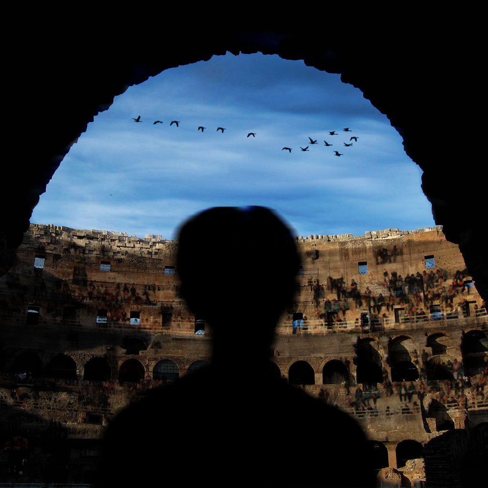

He originates from Long Island, where dragons and humanoid dragons have established themselves. Though they are allowed to cohabit, humanoid dragons are seen as “inferior” due to their human characteristics and inability to transform into full-fledge dragons and thus treated unfavorably. It is not uncommon for humanoid dragons like Long to move elsewhere, where they are perhaps a little more accepted, once they reach maturity. In Long Island, the inhabitants hold a triannual Roman-esque gladiatorial contest in which there can only be one survivor among 20 participants. It is a communally-agreed-upon means to address the issue of overpopulation as well as to establish the next Leader. Participation is voluntary. The brutality, in part, contributes to Long’s reason to move.